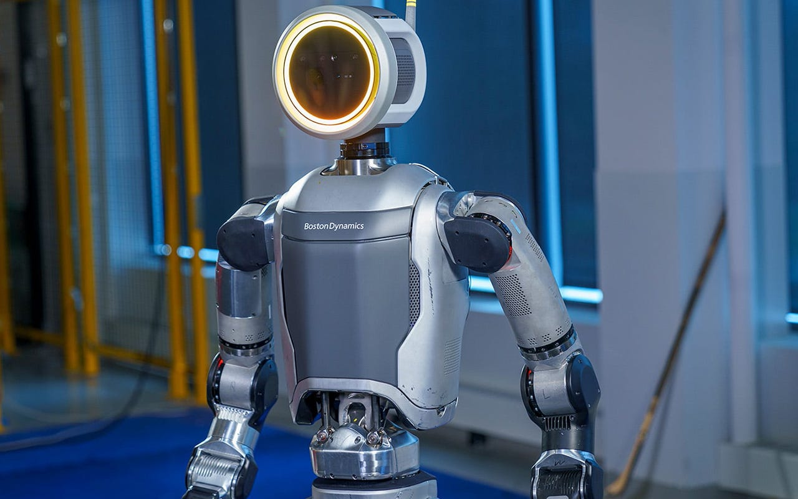
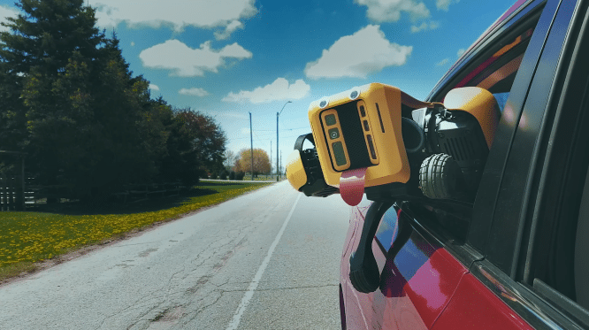
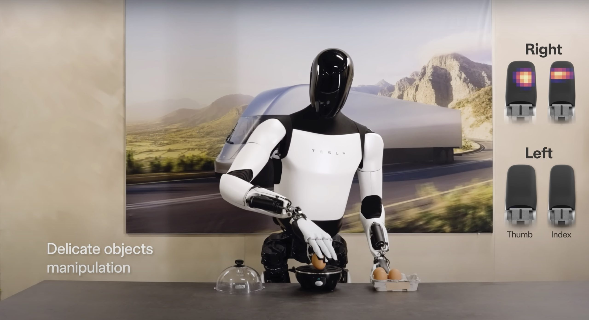

From Silicon Giants to Open Source Pioneers: Navigating the Future of Robotics

Dylan
April 22, 2024
Robots Among Us: Tapping into the High-Tech Hum of Tomorrow
Every day, our world buzzes with the hum of new technology. Just a casual scroll through YouTube or a swipe through my Google News feed bombards me with articles about the latest tech wonders. Among these marvels, robots stand out—a concept so futuristic, it used to fuel sci-fi fantasies more than actual garages. Yet here we are, with the future knocking on our door (probably a robot doing the knocking), and it’s both thrilling and a bit daunting. Though not as ubiquitous as smartphones, robots like Atlas, Optimus, and Spot are definitely on the rise. If we don't jump aboard this high-tech express soon, we might just find ourselves left behind, waving at the departure of the robot revolution.
And let's face it, the idea of robots joining our daily grind isn’t just impressive; it's a little intimidating! But fear not—embrace the change, or you might end up like my old VCR, gathering dust in the attic while everyone else streams the latest hits. Robots are not just gadgets from a gadget fair; their integration into our lives is accelerating. So, as they say, if you can't beat them, join them—or at least program them not to take over the world just yet!
Flips, Trips, and Robotic Acrobatics: The Atlas Chronicles

Atlast, Atlas is here, marking a giant leap from its early days when Boston Dynamics was just carving out its path in the robotic world. It's been quite a journey for Atlas, growing from a fledgling concept into a towering figure of technological prowess. Once a futuristic dream, this robot has evolved into a parkour master, flipping and now, figuratively flapping its way into commercial readiness. Imagine the excitement as this agile marvel prepares to step, or rather jump, out of the R&D labs and into practical applications. The vision? To have Atlas not just perform but assist in ways only once imagined in science fiction.
While Atlas will initially be used for practical projects to justify the cost, it's fascinating to consider how it could be adapted for mold remediation. Although the people I work with might not be thrilled with the prospect—seeing it as a threat to job security—I believe, as I've stated in another blog, that this represents not a potential loss but a potential gain. Two-person crews could become three, without incurring extra costs or losing the invaluable human touch.
Spot's Robotic Rendezvous: Unleashing High-Tech Tail-wagging Talent

When it comes to robotic precision, Spot is truly "spot on." This robotic rover from Boston Dynamics has been "spot"-ted in various industries, showcasing its ability to perform tasks with uncanny accuracy. You could say it's the "pick of the litter" when it comes to robotic efficiency.
Here's a "leash" of reasons why Spot's performance is nothing to "bark" at:
- Paws for Applause: Spot has made its mark without leaving a mark, navigating with such finesse that it's like watching a ballet dancer with a circuit board.
- Fetching Data: With sensors that could give any bloodhound a run for its money, Spot's data collection is as reliable as it gets. It's not just fetching data; it's fetching insights.
- No "Ruff" Days: This canine-like bot doesn't have bad days. It's programmed for persistence, making sure every task is done with "paw"-fection.
- Leading the pack: In the world of robotics, Spot isn't just part of the pack—it's leading it. With cutting-edge technology, it's setting the "gold" standard for four-legged robots.
- Barking right up the Tech Tree: Spot isn't limited to simple tricks or tasks; it's more like a Swiss Army knife with a tail. Its multifaceted capabilities ensure that it's barking up the right tech tree, proving that in the world of robotics, versatility is king—or should we say, the leader of the pack.
The iOS of Robotics: Optimus at Its Prime
Just as iOS is known for its sleek integration and user-friendly interface, Tesla's Optimus is setting itself apart as the iOS of the robotics world. With its polished design and streamlined functionality, Optimus represents a tightly integrated system that prioritizes ease of use and high-level performance.
Meanwhile, Boston Dynamics' creations, like Atlas and Spot, embody the Android spirit with their highly customizable and adaptable nature, appealing to those who value flexibility and a hands-on approach to technology.
Some Key features of Optimus:

- Prime Performance: Optimus is designed to function seamlessly right out of the box, mirroring the intuitive experience iOS users cherish. It's about giving users a smooth, predictable, and reliable interaction with robotics.
- Sleek Simplicity: In true Tesla style, Optimus's design is minimalistic yet powerful. It doesn't just perform tasks; it does so with a style that could easily make it the centerpiece of any tech-savvy living room or modern workspace.
- Integrated Ecosystem: Just as Apple has mastered the art of ecosystem connectivity, Tesla envisions Optimus as a key player in its ecosystem, interacting effortlessly with other Tesla products and services to automate tasks and enhance efficiency in homes and workplaces.
Tesla's Optimus, in its prime, promises to deliver the robotic equivalent of the seamless Apple experience—reliable, refined, and ready to redefine our expectations of personal robotics.
Optimus: Your Personal Chauffeur in the Tesla Model Y
Imagine climbing into the backseat of your shiny new Tesla Model Y, ready to unwind after a long day. There’s no need to reach for the steering wheel or even think about the road ahead, because sitting in the driver's seat isn’t another human—it’s Optimus, your personal robotic chauffeur.
Optimus isn’t just any robot; it’s your ticket to a new era of luxury and convenience. Programmed to navigate the bustling streets with Tesla’s precision-engineered autopilot technology, Optimus takes the wheel, transforming your daily commute into a stress-free sanctuary. Whether you’re heading to a crucial business meeting or cruising to a weekend getaway, Optimus handles all the driving duties.
With Optimus, you get the double advantage of Tesla’s cutting-edge technology and the novelty of having a robot as your driver. It’s more than just a ride; it’s a glimpse into a future where robots make life smoother and driving a purely leisurely pursuit. Sit back, relax, and enjoy the ride while Optimus chauffeurs you to your next destination in style.
Revving Up Robotics: The Open Road to DIY and Open Source Innovations
While titans like Boston Dynamics, Tesla, and even Nvidia (which we've sneakily not mentioned until now) are crafting proprietary robots set to revolutionize our world, it’s exciting to think about the possibilities with a Free and Open Source Software (FOSS) robot. Imagine this: a company designs a bot and then decides to power it with open-source code, maybe even throwing in a DIY manual that reads less like rocket science and more like an Ikea furniture guide—minimal swearing required.
This robot could run on AI like Mixtral, which keeps your data as private as your diary was from your annoying sibling—locked up tight and local, far from the prying eyes of any digital big brother.
Taking a page from our earlier Tesla chat, imagine this FOSS robot isn’t just any robot; it’s your personal chauffeur, but instead of a shiny Tesla, it’s whisking you around in your Lexus using OpenPilot and Comma 3. Forget about fancy tech giants; this is tech democracy in action! It’s not just a pipe dream; it’s a full-blown, open-source road trip into the future, putting the joystick of robotics into the hands of everyday people, ensuring it's not only accessible and customizable but also keeps your secrets safer than a squirrel with a nut.